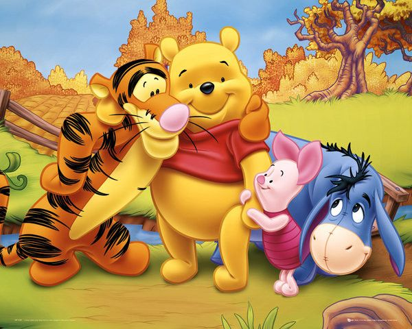

이력서 |
||||
| 이름 | 곰돌이 푸 | 생년월일 | 1926년 10월 26일 | |
| 국적 | 영국 | 소속 | 월드 디즈니 컴퍼니 | |
| 탄생배경 | ||||
| 제1차 세계 대전이 일어날 당시, 캐나다 해군 소속 군인 해리 콜번이 부대 안에서 기르던 캐나다산 흑곰을 런던 동물원에 기증했다. 그는 자신의 고향인 위니펙 (매니토바 주의 도시 이름)을 따서 그 곰에게 위니라는 이름을 붙였다고 한다. 그런 한편, 작가 A. A. 밀른과 그의 아들 크리스토퍼는 동물원을 자주 찾았는데, 아들이 유독 위니를 좋아했다고 한다. 알렉산더 밀른은 위니를 모델로 아들이 가진 테디 베어에 이름을 붙였고, 아들에게 읽어줄 잠자리 동화를 지었다. 이후 아들의 인형은 부엉이, 토끼 등으로 늘어났고, 그 뒤 친구인 일러스트 작가에게 삽화 그림을 부탁하여 1922년 <위니 더 푸 (Winnie-the-Pooh)>라는 책으로 펴내면서 많은 사람들에게 알려진다. 이후 디즈니에서 22번째로 제작한 장편 애니메이션이 된다 | ||||
| 같이 등장하는 친구들(사진 왼쪽부터) | ||||
|  | 친구1 | 티거 호랑이 |
주인공 | 푸 곰 |
| 친구2 | 피글렛 돼지 |
친구3 | 이요르 당나귀 |
|